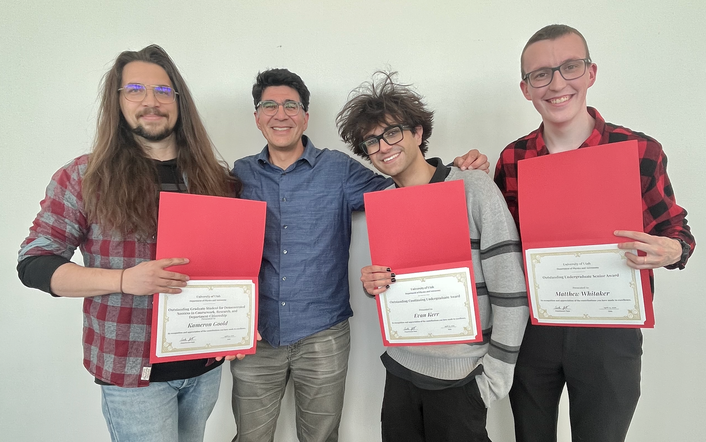

Group
I have had the privilege of working with some great postdocs, graduate students, and undergrads.



Current graduate students
- Isabella Carlton (2025–)
- David Ohlson (2022–)
- Kameron Goold (2022–)
- I'm also working with some great students at other institutions: Manuel Cavieres (Leiden), Liam Wang (Michigan), and Peter Smith (MPIA).
Current undergraduate students
- Evan Kerr (2025–)
Former Postdocs
- Zixian (Purmortal) Wang (2023–2025)
- Karina Voggel (2016–2019)
- Mark den Brok (2012–2015)
Former graduate students
- Christian Hannah (2020–2026)
- Callie Clontz (Utah/MPIA, 2022–2025)
- Ben Gibson (2020–2025; co-advisor)
- Aishwarya Ashok (2018–2022)
- Antoine Dumont (2017–2022)
- Renuka Pechetti (2015–2020)
- Chris Ahn (2014–2018)
- Dieu Nguyen (2012–2018)
- Cliff Johnson (U. Washington, 2010–2015, primary advisor for thesis project)
- I've also worked closely with students at MPIA in Nadine Neumayer's Group: including Maximillian Häberle, Nils Hoyer, Mayte Alfaro-Cuello, and Anja Feldmeier-Krause.
Former undergraduate students
- Zack Freeman (2022–2026)
- Matthew Whitaker (2023–2026)
- Sylvia Mesiceck (2025)
- Jack Nguyen (2024)
- Ethan Lame (2021)
- Aasutosh Acharya (2021)
- David Ohlson (2020–2021)
- Addie Wilkerson (ACCESS, 2020)
- Estephani TorresVillanueva (2019–2021)
- Tobin Wainer (2019–2021)
- Olivia Cooper (REU, 2018)
- Lexie Wilson (Honors Thesis, 2017)
- Candace Bryn (ACCESS, 2017)
- Timothy Bell (REU, 2016–2017)
- Julie Tang (ACCESS, 2016)
- Ellie Penner (ACCESS, 2015–2016)
- Jordan Bulkley (2014–2017)
- Gina Eastes (ACCESS, 2015)
- Alex Deich (2014–2015)
- Dylan Gregersen (2013–2015)
- Chris DiLullo (REU, 2014)
- Brian Kimmig (2012–2014)
- Matt Wallace (2013–2014)
- Katharine Larsen (Wellesley/Utah, 2011–2013)
- Nell Byler (Wellesley, 2011)